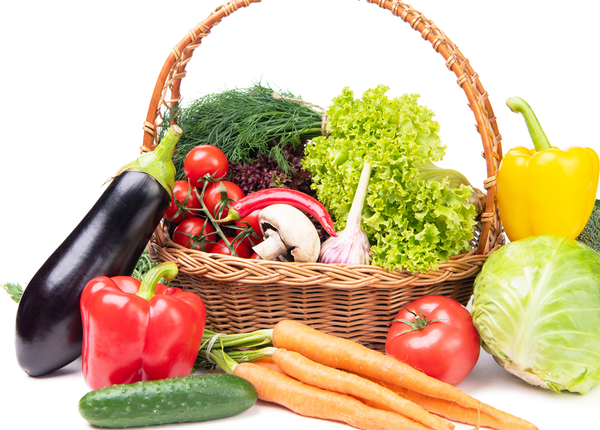

最短で24時間以内に届く、
新鮮なオーガニック野菜
宅配サービス。
こだわり農家の
朝どりオーガニック
野菜を
自宅で。
最短で24時間以内に届く、
新鮮なオーガニック野菜
宅配サービス。
こだわり農家の
朝どりオーガニック
野菜を
自宅で。
厳選したオーガニック農家さんの
穫れたて野菜を販売する「スグ食べ」
「スグ食べ」は、厳選したオーガニック農家さんの穫れたて野菜を、
最短で24時間以内にお届けする
オーガニック野菜宅配サービスです。
食材から選べるのはもちろん、
生産者からも選べます。
生産方法や生産地、それぞれ異なるこだわりで、
お気に入りの農家さんを見つけてください。

スグ食べが選ばれる3つの理由
-
1本当の意味での産地直送
「なるべく収穫したばかりの状態で、野菜を味わって欲しい。」スグ食べでは、既存の産地直送サービスのように箱詰め用の倉庫を介すことはありません。農家が収穫したその日に、お客様の元へ直送で野菜をお送りします。
-
2安心安全なオーガニック農作物
出品している生産者は、有機栽培もしくは自然栽培の農家のみ。全ての商品が無農薬・無化学肥料など、安全にこだわって生産された「オーガニック農作物」です。そのため、どの商品も安心してお買い求めいただけます。
-
3たくさんの旬な野菜との出会い
年間数十種の野菜を作る生産者から、今が旬の多様な野菜が届きます。スグ食べでは生産者ごとに商品が異なります。中には年間100種類もの多品種生産をしている生産者も。旬な野菜はもちろん、珍しい野菜とも出会えます。
1回限り！
少量 お試しセット
-
6品目

【ベジックス】
旬＊お試し野菜セット(6品目)1,280円（税込 / 送料別）
生産者：千葉県松戸市 ベジックス -
6品目
【くちぶえ農園】
旬＊お試し野菜セット(6品目)1,280円（税込 / 送料別）
生産者：長野県 飯田市 くちぶえ農園
スグ食べの品質保証
商品に不備があった際には、スグ食べが “全額” 返金対応します
スグ食べに出品している農家さんたちは、
「大切に育てた自慢の農作物を、できるだけ美味しい状態で食べてもらいたい。」
そんな想いを持った農家さんばかりです。
そのため、収穫から梱包・出荷にいたるまでしっかりと品質管理されています。
とはいえ、実物を見ずに野菜や果物を購入するのはちょっと不安…
そんな方にも安心してご購入いただけるよう、スグ食べでは品質保証をお約束しています。
万が一届いた商品に不備があった際には、スグ食べにて全額返金対応いたします。
実はまだまだこんなに少ない、
日本のオーガニック農家
オーガニック農家は、国内全体の約0.5％！
最近はレストランなどでもよく目にするので
もっとたくさんあるかと思いきや、
実はオーガニック農家は国内農家の0.5％しか存在
していません。
でもその0.5％のオーガニック農家は、
健やかな野菜を安心して食べてもらいたいという
強い気持ちで大切に野菜を作っています。
スグ食べでは、そんな農家さんを厳選し、
出品していただいています。
農家さんによって栽培方法も違います。
自分や家族の体を作る礎となる野菜の栽培方法、
この機会に把握してみては？
きちんと知っておきたい、
栽培方法による違い
特別栽培
第三者機関認証アリ
有機栽培
第三者機関認証アリ
自然栽培
第三者機関認証ナシ
農薬・肥料・堆肥など
特別栽培
第三者機関認証ナシ
農薬：栽培期間中
不使用
特別栽培
第三者機関認証ナシ
節減対象農薬：当地比5割減
化学肥料(窒素成分)：当地比5割減
私たちの野菜、
こんなにおいしいんです！
こんな農家さんが登録しています
安心安全なお野菜を、ご堪能ください!
ひだまり農場 （岡山県） 山田洋一さん
「ひだまり農場」では栽培期間中に農薬・化学肥料を一切使用せず、年間約100種類の野菜と米、卵を生産しています。堆肥・肥料もすべて手作りし、有機質のものを使用しています。
旬なお野菜を存分に楽しんでください

爽緑農園 太田紘一さん
「爽緑農園」では農薬や除草剤は一切使用せず、一つ一つのお野菜を丁寧に栽培しています。お日様の光をたくさん浴びて育ったお野菜は、葉や皮まで余すことなく食べることができます。
1回限り！
少量 お試しセット
自信があるから、食べてもらいたい！-
6品目
【ベジックス】
旬＊お試し野菜セット(6品目)1,280円（税込 / 送料別）
生産者：千葉県松戸市 ベジックス -
6品目
【くちぶえ農園】
旬＊お試し野菜セット(6品目)1,280円（税込 / 送料別）
生産者：長野県 飯田市 くちぶえ農園
食べ頃の野菜 を
厳選 して お届けいたします。
サラダや
焼くだけのシンプル調理でもおいしさ抜群です。
甘みの宝箱 春彩トマト

トマトの常識が変わる、春限定の「春彩トマト」。有機農法で育てられたトマトは、丁寧に収穫されて直送されます。糖度が高い品種で、そのまま食べても、サラダやオーブン焼きにも絶品です。
朝市仕立ての 春きぬさや
透明感があり、きれいな緑が魅力のきぬさやです。朝摘みならではの鮮度でお届けするのがこだわり。塩炒めやスープに入れるとその鮮度が際立ち、春ならではの味わいを楽しめます。
丸ごと食べたい 菜の花の花束

鮮やかな緑色とほろ苦い味わいが食欲をそそる菜の花。湯がいておひたし、パスタの具材などアレンジしやすい一品です。旬の野菜だからこそ、新鮮なままお届けします。
森の香り 野生のエリンギ

自然の土壌と有機栽培で育てられたエリンギは、焼けばジューシーな旨味を楽しめます。肉や野菜と合わせた炒め物はもちろん、バター焼きでも絶品。料理の幅を広げる強い味方です。
食べてわかった、この違い
おかげさまで感謝のお声をいただいています香りまでおいしい新鮮さ

神奈川県 A様
箱を開けた途端に広がった野菜の香り。 スーパーで買った野菜とはどうしてこんなに違いがあるのかとびっくりするほど豊かな大地の香りです。 葉っぱまでシャキシャキのにんじんは特に子供がお気に入り。 ゆでただけでも、野菜の甘みが優しく広がり、本来の味がたのしめます。
安心できる品質に大満足
千葉県 O様
オーガニック農作物にこだわった生産者から送られてくるため、とても安心して毎日食卓に出せるのがうれしいです。 小さな子供や働き盛りの夫など、健康に気を遣って食から体づくりをしたい我が家には、もう手放せない野菜となっています。
旬の野菜が食べられる豊かさ
東京都 M様
鮮度にこだわる「スグ食べ」だからこそ、旬になった野菜を「今だ！」と送ってきてくれるので、食卓に並ぶ野菜は常に旬の食材です。 一カ所の農家さんからではなく複数の農家から選べるので、地域によっての旬の違いも楽しめます。 たまに、スーパーに並ばないような珍しい野菜がまざるのも、わくわくしますね。
よくあるご質問
産地直送のサービスってよく見るけど何が違うの？
鮮度が抜群に違います。
通常の産直サービスは、一度倉庫などに野菜を集め、そこで箱詰め作業をして配送しています。
この仕組みでは、お客様が商品を受け取る時には収穫してから3,4日が経過しています。スグ食べでは、箱詰め作業を農家さんにお願いすることにより、最短で収穫当日に商品を受け取ることができます。
どんな農家さんが登録してるの？
農薬不使用にこだわる、オーガニック農家さんのみが登録しています。
有機栽培や自然栽培などの環境に配慮した農法で生産するには、通常以上に費用も手間もかかります。そんな中でも、「安心な野菜を食べて欲しい」という強い思いを持って、こだわって野菜を作っている農家さんがいます。 そういった、厳選されたオーガニック農家さんのみが登録しているため、安心してお買い物を楽しんでいただけます。
1回限り！
少量 お試しセット
自信があるから、食べてもらいたい！-
6品目
【ベジックス】
旬＊お試し野菜セット(6品目)1,280円（税込 / 送料別）
生産者：千葉県松戸市 ベジックス -
6品目
【くちぶえ農園】
旬＊お試し野菜セット(6品目)1,280円（税込 / 送料別）
生産者：長野県 飯田市 くちぶえ農園